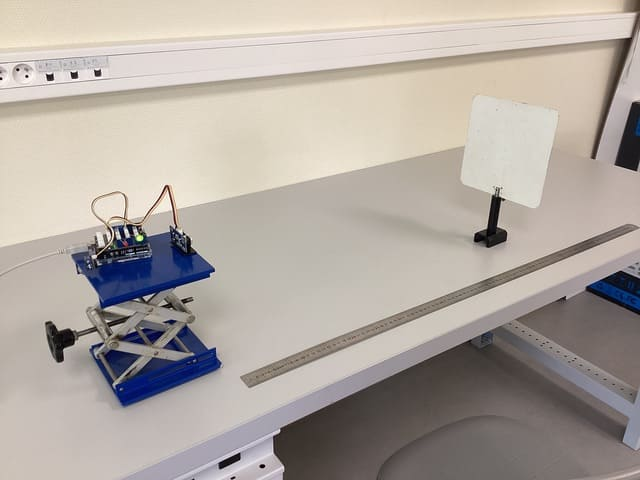
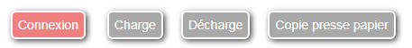
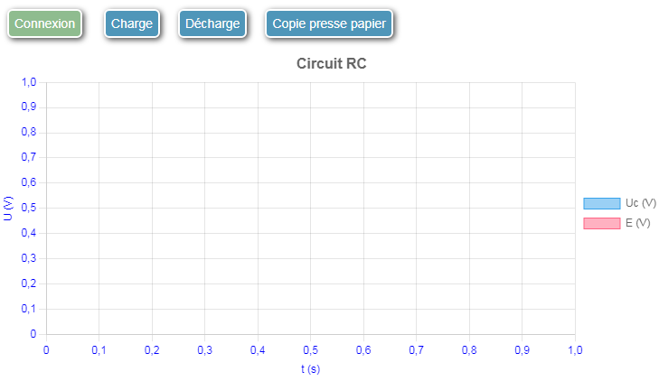

Célérité des ultrasons dans l'air.
Ce mode d'emploi précise comment utiliser la bibliothèque Web-Sciences pour transformer une carte Arduino en une interface de mesure.
Pour utiliser efficacement la bibliothèque Web-Sciences et transformer votre carte Arduino en une interface de mesure, suivez ces étapes détaillées.
.ino correspondant.Le code JavaScript doit être complété en cinq étapes :
Définissez le mode :
mode = "temporel"; // ou "point" ou "commande"Spécifiez les commandes à envoyer à la carte Arduino ainsi que le texte à afficher sur le bouton que l'utilisateur va cliquer:
commandes = [{texte_bouton:"Charge", arduino:"charge"},
{texte_bouton:"Décharge", arduino:"decharge"}];Chaque élément du tableau commandesdu type {texte_bouton:"...", arduino:"..."}va créer
un bouton qui permet d'envoyer une commande à Arduino.
Définissez les séries renvoyées par la carte avec leurs unités:
series = [{grandeur: "Uc", unite: "V"}, {grandeur: "E", unite: "V"}];Remarque : Dans le cas du mode temporel, la première série renvoyée par la carte est toujours le temps. Il n'est pas nécessaire de le
préciser dans la variable series.
Définissez les axes :
axes = [{grandeur: "t", unite: "ms"}, {grandeur: "U", unite: "V"}];Remarques :
series.seriesChoisissez, si nécessaire, un titre pour le graphique
titre_graphe = "Circuit RC";Par défaut, le programme utilise 3 chiffres significatifs. Modifiez, si nécessaire, la variable precision
precision = 5;Placez tout le code JavaScript dans une variable python de type str:
my_init = '''
mode = "temporel";
commandes = [{texte_bouton:"Charge", arduino:"charge"},
{texte_bouton:"Décharge", arduino:"decharge"}];
series = [{grandeur: "Uc", unite: "V"}, {grandeur: "E", unite: "V"}];
axes = [{grandeur: "t", unite: "ms"}, {grandeur: "U", unite: "V"}];
titre_graphe = "Circuit RC";
'''Copiez le fichier web_sciences.py dans le même dossier que votre notebook.
Intégrez le code précédent dans une cellule Jupyter :
from web_sciences import WebSciences
my_init = '''
mode = "temporel";
commandes = [{texte_bouton:"Charge", arduino:"charge"},
{texte_bouton:"Décharge", arduino:"decharge"}];
series = [{grandeur: "Uc", unite: "V"}, {grandeur: "E", unite: "V"}];
titre_graphe = "Circuit RC";
axes = [{grandeur: "t", unite: "ms"}, {grandeur: "U", unite: "V"}];
'''
interface = WebSciences(my_init)
interface.affiche()Après exécution de la cellule Jupyter, on obtient quelque chose qui ressemble à ceci :

Après avoir cliqué sur le bouton Connexion et connecté la carte Arduino, les boutons s'activent et
le graphe apparaît éventuellement :

Au préalable, téléchargez les deux fichiers suivants :
web_sciences_complet.html : Contient le modèle HTML de base.insere_code.py : Script Python pour intégrer votre code JavaScript dans un fichier HTML.Utilisez le code préparé précédemment, qui configure les variables mode,
commandes, series, axes, titre_graphe
et éventuellement précision.
insere_code.py :
Collez le code JavaScript dans la section prévue, par exemple :
# code javascrit à insérer
my_init = '''
mode = "temporel";
commandes = [{texte_bouton:"Charge", arduino:"charge"}, {texte_bouton:"Décharge", arduino:"decharge"}];
series = [{grandeur: "Uc", unite: "V"}, {grandeur: "E", unite: "V"}];
axes = [{grandeur: "t", unite: "ms"}, {grandeur: "U", unite: "V"}];
titre_graphe = "Circuit RC";
'''Ajoutez le nom du fichier HTML généré dans insere_code.py :
# nom du fichier html de sortie
nom_sortie = "circuit_rc.html"Exécutez le programme insere_code.py depuis l'environnement python ou
ouvrez un terminal et lancez la commande :
python insere_code.pyUn fichier HTML sera généré avec le nom défini dans la variable nom_sortie.
Double-cliquez sur le fichier HTML pour l’ouvrir dans un navigateur compatible avec l'API Web Serial(par exemple Chrome).
Elle sera identique à celle générée dans un notebook Jupyter.
Après avoir cliqué sur le bouton Connexion et connecté la carte Arduino, les boutons s'activent et
le graphe apparaît éventuellement :
Ajoutez ou modifiez la variable suivante dans le code JavaScript avant de générer le fichier HTML :
tableur = true;Les données copiées dans le presse-papiers seront formatées pour être collées dans un tableur.
Ce mode d’emploi vous permet d'utiliser la bibliothèque Web-Sciences avec un tableur ou un environnement Python.
Partagez le fichier HTML généré avec vos élèves pour une utilisation simple et autonome.
web_sciences_complet.html qui contient le modèle HTML de base web_sciences_complet.html.insere_code.pypour créer un fichier html utilisable avec un tableur ou un IDE python insere_code.py.